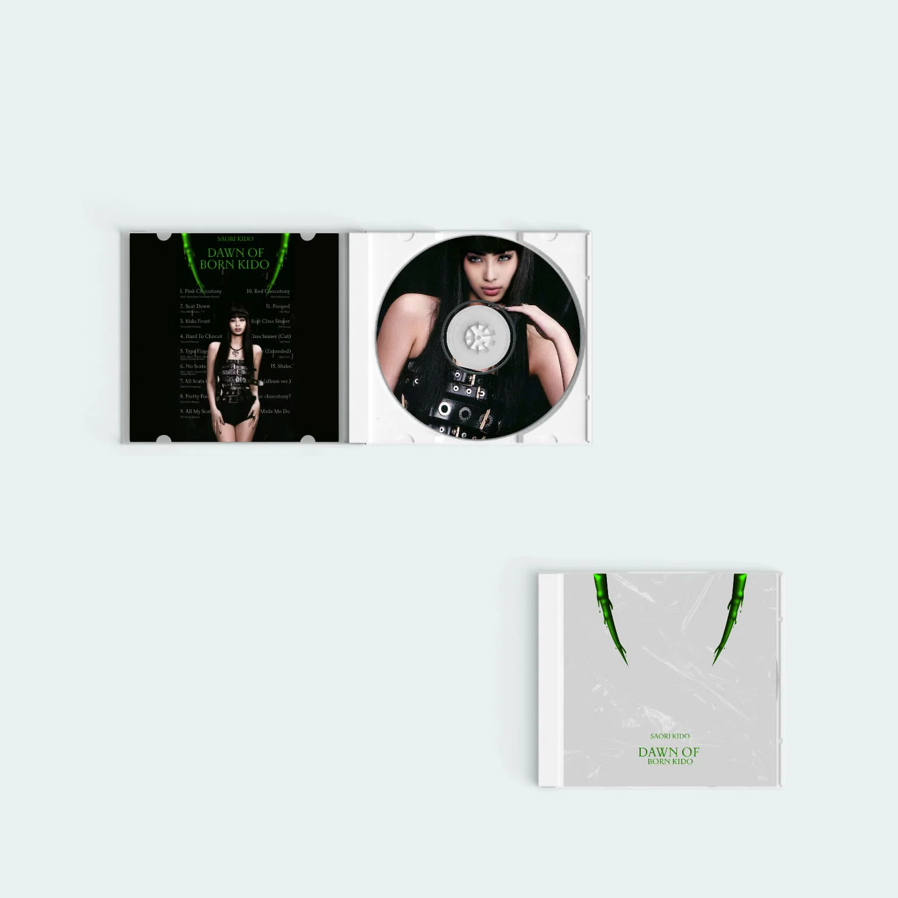

Dawn Of Born Kido Standard CD
NEW

Lançado de surpresa durante o retorno triunfal da Born Kido World Tour, The Dawn Of Born Kido marca uma nova fase na era que redefiniu Saori Kido. O projeto revisita o álbum original com remixes de todas as 14 faixas, além de apresentar 3 músicas inéditas que expandem seu universo sonoro.
Mais experimental, intenso e ousado, o álbum reforça a capacidade da artista de se reinventar e transformar sua própria obra em algo completamente novo.
R$89,99
Frete gratis